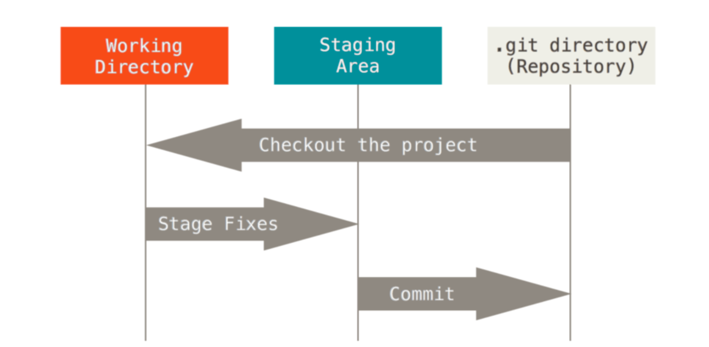
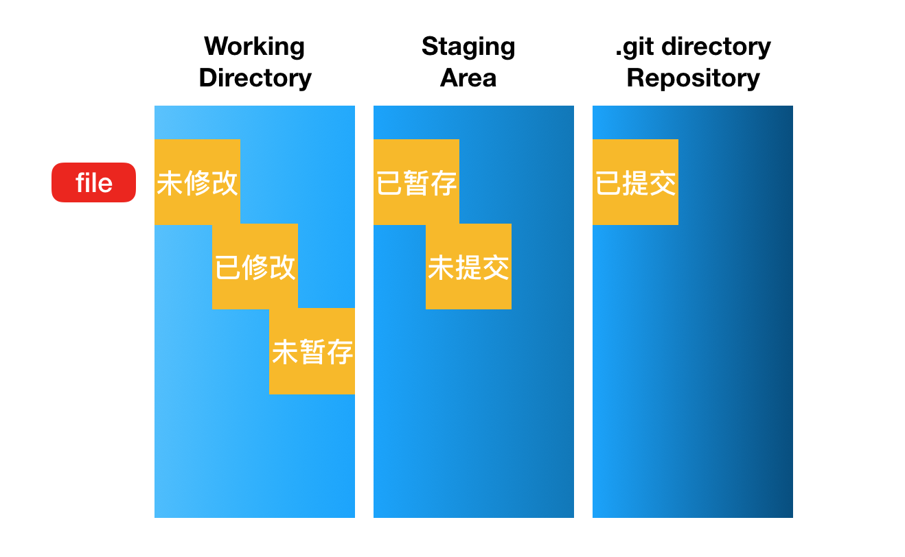

三种状态
Git 有三种状态，你的文件可能处于其中之一
三种状态
- 已提交(committed)
- 已修改(modified)
- 已暂存(staged)
已提交(committed)：表示数据已经安全的保存在本地数据库中 。
已修改(modified)：表示修改了文件，但还没保存到数据库中 。
已暂存(staged)：已暂存表示对一个已修改文件的当前 版本做了标记，使之包含在下次提交的快照中。
三个工作区域
由此引入 Git 项目的三个工作区域的概念
- Git 仓库
- 工作目录
暂存区域
Figure 6. 工作目录、暂存区域以及 Git 仓库.
Git 仓库目录是 Git 用来保存项目的元数据和对象数据库的地方。 这是 Git 中最重要的部分，从其它计算机克隆仓库时，拷贝的就是这里的数据。
工作目录是对项目的某个版本独立提取出来的内容。 这些从 Git 仓库的压缩数据库中提取出来的文件，放在磁盘上供你使用或修改。
暂存区域是一个文件，保存了下次将提交的文件列表信息，一般在 Git 仓库目录中。 有时候也被称作“索引”，不过一般说法还是叫暂存区域。
基本的 Git 工作流程
- 在工作目录中修改文件。
- 暂存文件，将文件的快照放入暂存区域。
- 提交更新，找到暂存区域的文件，将快照永久性存储到 Git 仓库目录。
如果 Git 目录中保存着特定版本的文件，就属于已提交状态。
如果作了修改并已放入暂存区域，就属于已暂存状态。
如果自上次取出后，作了修改但还没有放到暂存区域，就是已修改状态。
在Git 基础一章，你会进一步了解 这些状态的细节，并学会如何根据文件状态实施后续操作，以及怎样跳过暂存直接提交。

my01.文件流程